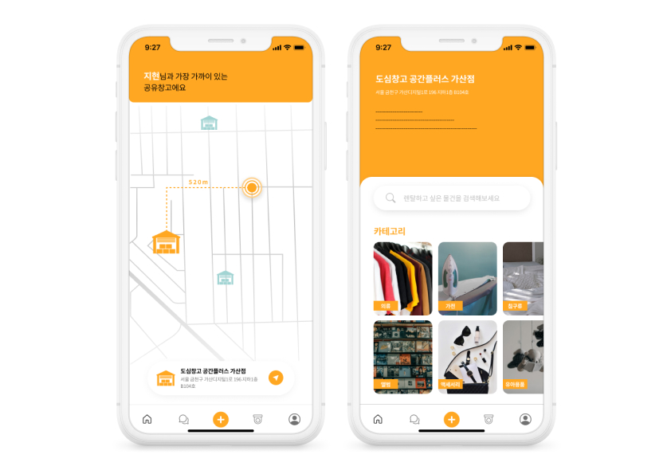
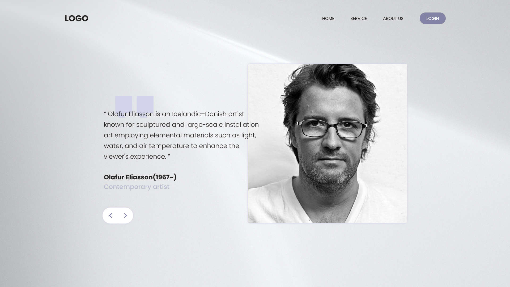
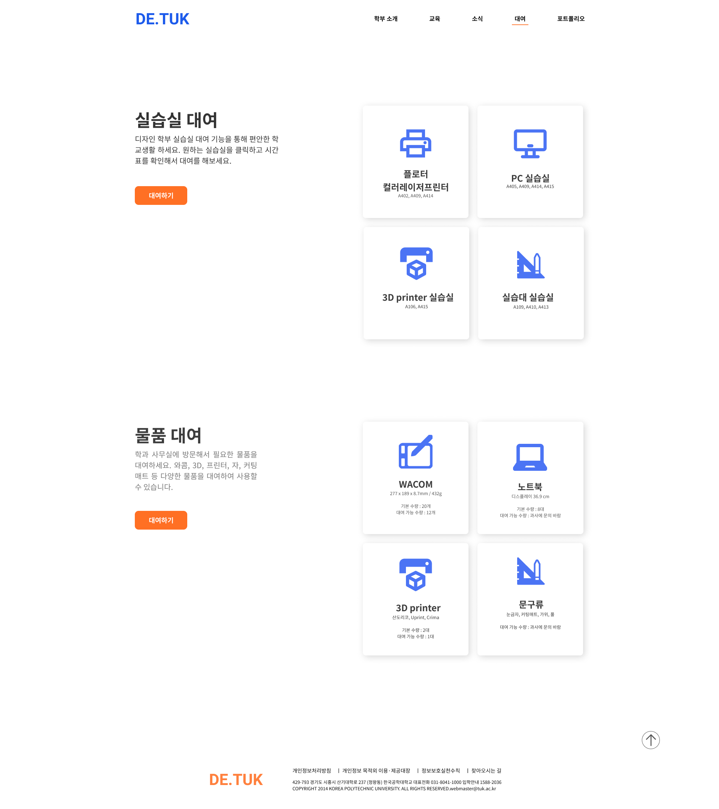
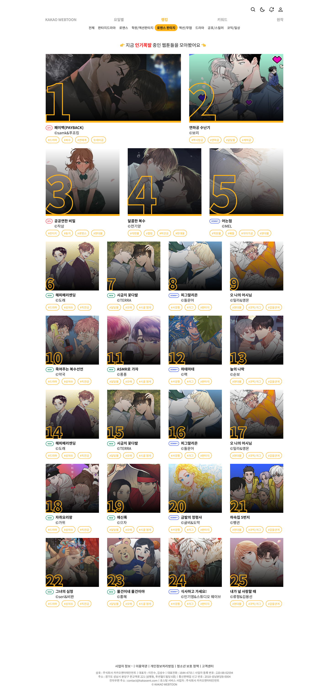
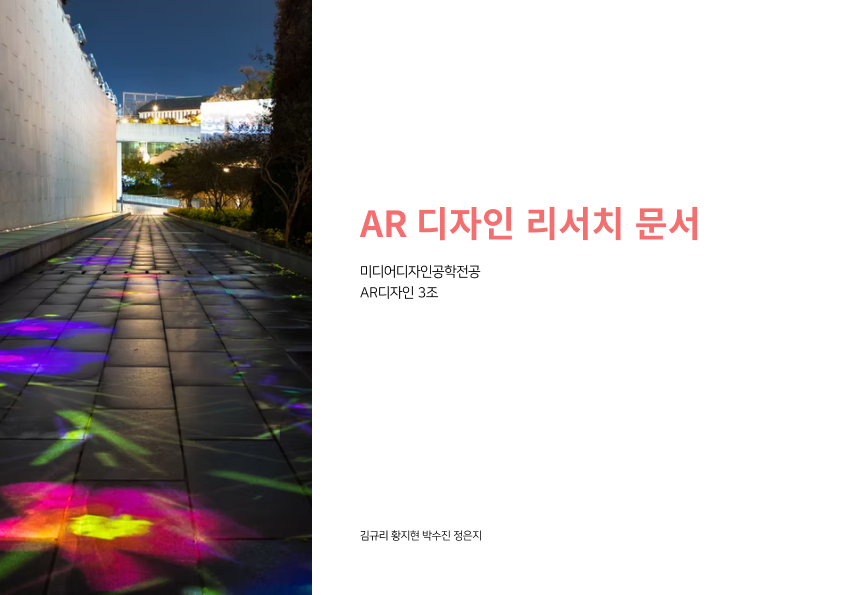
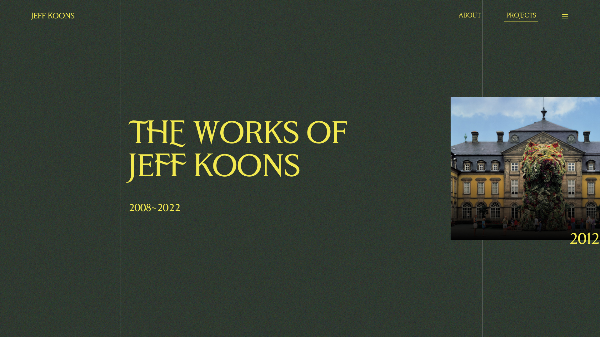
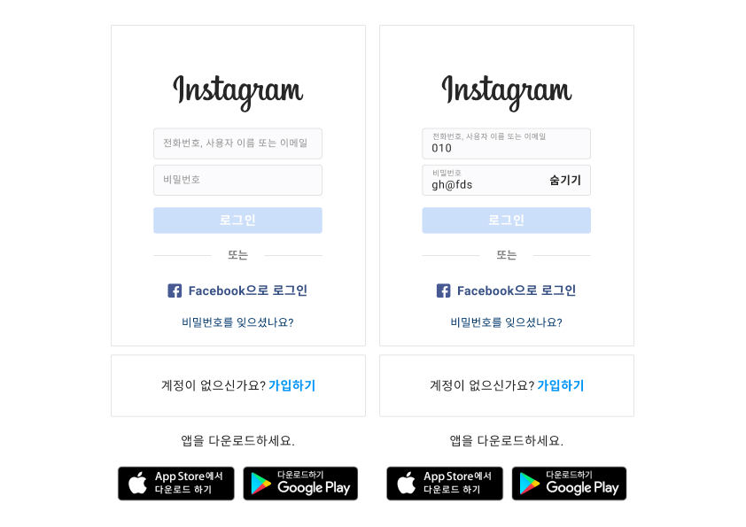
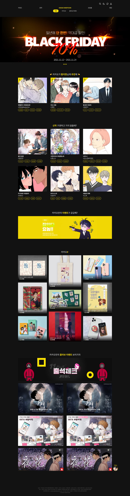

2021 UX/UI 디자인
'디자인기획과스타트업' 이라는 전공 수업에서 진행했던 프로젝트입니다.
공유창고 관련 UI를 제작했습니다.

2022 웹디자인+개발
'인터렉티브웹' 이라는 전공 수업에서 진행했던 프로젝트입니다.
현대 예술가들을 소개하는 웹사이트입니다.

2021 웹디자인+개발
'웹퍼블리싱응용' 이라는 전공 수업에서 진행했던 프로젝트입니다.
한국공학대학교 디자인공학부 홈페이지를 리디자인하고 개발까지 진행했습니다.

2021 웹디자인
'웹디자인' 이라는 전공 수업에서 진행했던 프로젝트입니다.
카카오웹툰 웹사이트의 단점을 도출해내고 개선하는 리디자인을 진행했습니다.

2022 웹디자인
'제프 쿤스' 라는 현대 예술가를 소개하는 웹사이트입니다.
예술가의 방향성과 어울리는 웹사이트 디자인을 진행해보았습니다.
추가적인 디자인 시안 수정 후 개발까지 진행할 예정입니다.

2021 AR 컨텐츠 제작
'AR디자인' 이라는 전공 수업에서 진행했던 프로젝트입니다.
시흥시에 위치한 오이도 박물관 내부에 전시할 AR 컨텐츠 제작을 진행했습니다.

2022 웹디자인
'제프 쿤스' 라는 현대 예술가를 소개하는 웹사이트입니다.
예술가의 방향성과 어울리는 웹사이트 디자인을 진행해보았습니다.
추가적인 디자인 시안 수정 후 개발까지 진행할 예정입니다.

2022 웹디자인+개발
'인터렉티브웹' 이라는 전공 수업에서 진행했던 프로젝트입니다.
인풋 태그를 활용한 인스타그램 로그인 화면을 디자인 시안을
제작하고 개발까지 진행해보았습니다.

2021 웹디자인
'웹디자인' 이라는 전공 수업에서 진행했던 프로젝트입니다.
카카오웹툰 웹사이트의 단점을 도출해내고 개선하는 리디자인을 진행했습니다.